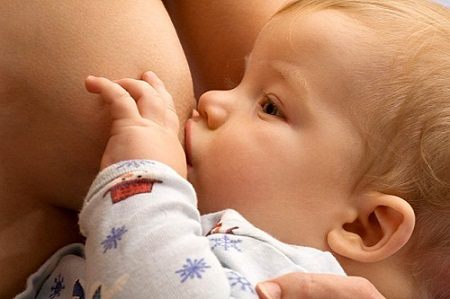

Это популярное, умиротворяющее приспособление использовалось десятилетиями для того, чтобы помогать детям легче переживать периоды беспокойства. Родителей часто волнует вопрос: когда ее можно использовать, а когда — нет. Вот основные правила:
Не для детей, вскармливаемых грудью. В течение первого месяца не давайте пустышку ребенку, вскармливаемому грудью. Во время обучения кормлению грудью младенец должен брать в рот только сосок матери. Таким образом, единственная «соска», которой он должен научиться пользоваться, — это сосок мамы, чтобы она не потеряла молоко. Пустышки — это искусственные соски, которые могут запутать ребенка. Так как у пустышек узкое основание, чтобы взять их в рот, его не надо широко открывать. Но чтобы правильно сосать мамину грудь, младенцу приходится учиться широко открывать рот, чтобы обхватить ареолу вокруг соска матери. Если ребенок сосет грудь таким же образом, как и пустышку, мама будет испытывать неприятные ощущения при кормлении из-за так называемого «слабого захвата». У мамы могут воспалиться соски, а ребенок будет получать недостаточно молока. Пустышки также уменьшают количество времени, которое ребенок проводит у груди, и это может ослабить выработку молока у матери. Некоторые дети могут успешно переключаться от пластикового приспособления на человеческий сосок без каких-либо затруднений. Мы советуем матерям, кормящим грудью, избегать использования пустышек, пока малыш не научится правильно захватывать сосок и лактация не установится. Исследования показывают, что дети, которые пользуются пустышками, часто намного раньше отказываются от груди, чем те, кто не пользуются ими. Исследование 700 пар мать — младенец показало, что раннее начало использования пустышки значительно сократило продолжительность грудного вскармливания.

Используйте вместо пустышки свой палец. Использование пальца в качестве пустышки предоставляет более естественное ощущение кожа к коже. Вставьте свой палец примерно на 2,5 см в рот ребенка (примерно до середины расстояния между 1-й и 2-й фалангой) так, чтобы ноготь дотрагивался до языка. Это ближе к тому, что чувствует ребенок, держа во рту грудь.
Используйте пустышку для интенсивных сосальщиков. Некоторые дети рождаются с выраженной необходимостью сосать и чудесным образом успокаиваются от пустышек. Помимо того, что сосание успокаивает ребенка, оно стимулирует выработку слюны, что полезно для гигиены полости рта и для развития пищеварительной системы. Некоторым ненасытным сосальщикам необходимо продолжать сосать даже после окончания кормления грудью. Если они не соглашаются сосать палец, пустышка сможет оказать помощь в поддержании мира. Мы называем таких детей «круглосуточные сосальщики».
Держите ребенка на руках во время сосания. Резиновая пустышка никогда не должна замещать настоящего живого человека, за исключением коротких интервалов, когда вам нужно положить ребенка. Часы «отключки» в одиночестве с пустышкой во рту плохо влияют на развитие ребенка.
КОГДА ОТБИРАТЬ ПУСТЫШКУ
Для большинства детей использование пустышки — безобидная успокаивающая привычка. Но в нижеперечисленных ситуациях стоит задуматься о прекращении использовании этого приспособления:
Когда мама становится зависимой. Как узнать, что вы перестарались с пустышкой? Подсказка: когда ваш ребенок плачет, а вы рефлекторно тянетесь за пустышкой, вместо того чтобы тянуться к ребенку, пора отбирать пустышку.
Когда ребенок становится слишком зависимым. Если вы понимаете, что ребенок тянется за пустышкой, вместо того чтобы тянуться к родителям, отбирайте пустышку.
Когда начинаются проблемы с зубами. Сосание пустышки создает сильное давление, и если оно продолжается после года, то может привести к образованию глубокого прикуса и другим стоматологическим проблемам.
Когда у ребенка часто случаются ушные инфекции. Исследование, опубликованное в журнале «Педиатрия», установило, что дети, которые использовали пустышки, чаще страдали от инфекций уха. Когда родители ограничивали использование пустышки, случаи инфекций уха снизились. Хотя это исключительно статистическая зависимость, возможно, что продолжительное сосание пустышки нарушает нормальное функционирование евстахиевых труб, приводя к скоплению жидкости в полости среднего уха.
КАК ОТОБРАТЬ ПУСТЫШКУ
Да, настает время, когда появляется необходимость отобрать пустышку. Вот как можно решить проблему, если у вашего ребенка наблюдается хоть какой-то из вышеперечисленных «когда»:
Заменить и отвлечь. Помимо того, что вы являетесь человеческим успокоителем своего ребенка в данный период времени, предоставьте ему другие приспособления, такие как симпатичная кукла или плюшевый медвежонок. Когда малыш расстроен или беспокоен, отвлеките его забавной игрой.
Выменяйте. Это самый эффективный способ отказа от пустышки, который мы используем в своей практике. Отведите ребенка в магазин игрушек и позвольте ему выбрать успокаивающую игрушку, чтобы выменять ее на пустышку. Неплохая сделка: пустышка остается в мусорной корзине в магазине, а ребенок уходит с куклой или медведем. Опытные сотрудники магазина привыкли к таким обменам.
Потеряйте. Спрячьте соску так, чтобы ее было трудно найти. Когда ваш ребенок начинает шарить по дому, ища своего резинового друга, отвлекайте его веселой игрой. Затем скажите, что пустышка «потерялась», покажите ему какие-нибудь новые милые игрушки и проводите больше времени, играя с ребенком.
Подстригите. Постепенно все больше срезайте наконечник соски, пока ребенок не потеряет к ней интерес. |
Пригласите «фею пустышек». Однажды ночью придет фея пустышек, заберет пустышку и оставит более привлекательный подарок.
Используйте пример сверстников. Поместите ребенка в группу с другими детьми, которые не пользуются пустышками. В случае, если ребенок действительно не может обойтись без пустышки, организуйте вечеринку «пустышки» и попросите всех похлопать, когда он выбросит пустышку в мусорную корзину.
Отлучайте медленно. Если ваш ребенок действительно зависим от пустышки, постепенно сокращайте частоту и продолжительность ее использования. Позвольте ему недолго сосать ее, когда чувствуете, что ему это действительно нужно, одновременно постепенно вводя более успокаивающие альтернативы. Запомните, отлучение от пустышки, как и отлучение от груди, означает не резкое прекращение, а скорее переход от одного успокаивающего предмета к другому. Неважно, какую технику вы будете использовать, чтобы отобрать пустышку, вам придется одновременно окружать своего ребенка более любящими предметами и людьми. Краткое резюме: используйте ее, не злоупотребляйте ею, а когда придет время, потеряйте ее.
Здоровье ребенка от докторов Сирс / Сирс У. и др.